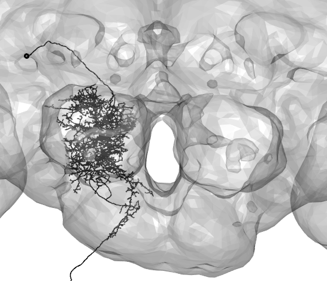
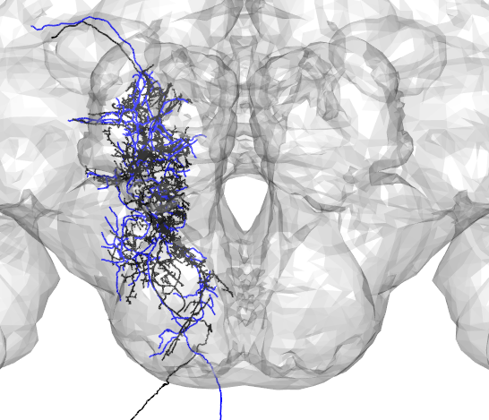
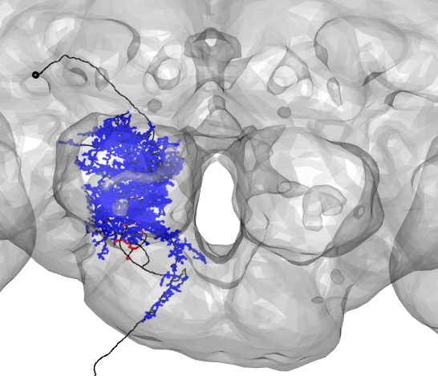
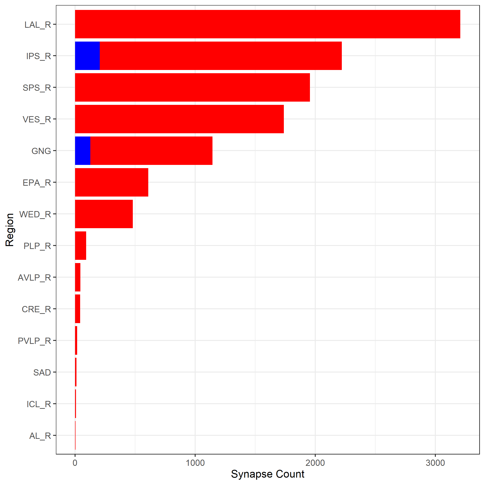
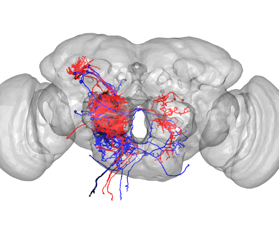

Working with CATMAID(FAFB) Data
The main natverse tools that exist for working with FAFB data are catnat, rcatmaid, and [elmr] http://natverse.org/elmr/index.html
To access v14 FAFB data using R, you first need to establish a catmaid connection
catmaid_login(server="https://neuropil.janelia.org/tracing/fafb/v14/",authname='fly',authpassword='superfly',token="yourtokenhere")Fetch Neurons from FAFB
Provide the skeleton ID of the desired neuron in v14 to fetch the skeleton and read it as a neuron object
DNa02=read.neurons.catmaid(12526673)
open3d(userMatrix=rotationMatrix,windowRect=windowRect,zoom=0.33)
plot3d(DNa02,soma=TRUE,lwd=2,col='black',WithNodes=FALSE)
plot3d(FAFB)
Compare with neurons in other brain spaces
Skeletons fetched from v14 are registered to the template brain called FAFB. To compare with neurons in other brain spaces, these neuron objects can be transformed using xform_brain. For example, here a neuron traced from a ligh-level image(in blue) is compared with a skeleton fetched from FAFB(in black).
Namiki_tracing_1 <-read.neuron('data/Namiki_tracing_registered.swc')
Namiki_tracing_FCWB<-xform_brain(Namiki_tracing_1,sample=JFRC2013,reference=FCWB)#transform neuron into FCWB template brain space
A2_EM_FCWB<- xform_brain(DNa02,sample=FAFB, reference = FCWB)
#plot together with light-level tracing
open3d(userMatrix=rotationMatrix,windowRect=windowRect,zoom=0.33)
plot3d(A2_EM_FCWB,lwd=2,col="black",WithNodes=FALSE)
plot3d(Namiki_tracing_FCWB,lwd=2,col="blue",WithNodes=FALSE)
plot3d(FCWB)
Find synapses
To get the locations of synapses made by your neuron of interest, use get_synapses:
DNa02_presynapses=get.synapses(DNa02,target=c("PRE"))
DNa02_postsynapses=get.synapses(DNa02,target=c("POST"))
#plot synapse locations with neuron
open3d(userMatrix=rotationMatrix,windowRect=windowRect,zoom=0.33)
plot3d(DNa02,lwd=2,col='black',withNodes=FALSE,soma = TRUE)
points3d(DNa02_presynapses, col = "red", lwd = 10)
points3d(DNa02_postsynapses, col = "blue", lwd = 2)
plot3d(FAFB)
Synapses can be grouped based on brain region using inside_neuropils
DNa02=read.neurons.catmaid(12526673)First, grouping the presynaptic partners of our neuron by brain region, we get:
#Note: here the 'POST' tag indicates that our neuron is postsynaptic to the input neurons being found
pre_neuropils = inside_neuropils(DNa02,brain = FAFB14NP.surf, "POST")
pre_neuropils## $`12526673`
## AME_R LO_R NO BU_R PB LH_R LAL_R SAD
## 0 0 0 0 0 0 3209 12
## CAN_R AMMC_R ICL_R VES_R IB_R ATL_R CRE_R MB_PED_R
## 0 0 7 1739 0 0 43 0
## MB_VL_R MB_ML_R FLA_R LOP_R EB AL_R ME_R FB
## 0 0 0 0 0 4 0 0
## SLP_R SIP_R SMP_R AVLP_R PVLP_R WED_R PLP_R AOTU_R
## 0 0 0 44 17 481 93 0
## GOR_R MB_CA_R SPS_R IPS_R SCL_R EPA_R GNG PRW
## 0 0 1956 2015 0 610 1017 0
## GA_R AME_L LO_L BU_L LH_L LAL_L CAN_L AMMC_L
## 0 0 0 0 0 0 0 0
## ICL_L VES_L IB_L ATL_L CRE_L MB_PED_L MB_VL_L MB_ML_L
## 0 0 0 0 0 0 0 0
## FLA_L LOP_L AL_L ME_L SLP_L SIP_L SMP_L AVLP_L
## 0 0 0 0 0 0 0 0
## PVLP_L WED_L PLP_L AOTU_L GOR_L MB_CA_L SPS_L IPS_L
## 0 0 0 0 0 0 0 0
## SCL_L EPA_L GA_L
## 0 0 0
##
## attr(,"class")
## [1] "neuronlist" "list"
## attr(,"df")
## pid skid name
## 12526673 1 12526673 DNa02_ALNext,grouping the postsyanptic partners of our neuron by brain region, we get:
#Note: here the 'PRE' tag indicates that our neuron is presyanptic to the output neurons being found
post_neuropils= inside_neuropils(DNa02,brain = FAFB14NP.surf, "PRE")
post_neuropils## $`12526673`
## AME_R LO_R NO BU_R PB LH_R LAL_R SAD
## 0 0 0 0 0 0 0 0
## CAN_R AMMC_R ICL_R VES_R IB_R ATL_R CRE_R MB_PED_R
## 0 0 0 0 0 0 0 0
## MB_VL_R MB_ML_R FLA_R LOP_R EB AL_R ME_R FB
## 0 0 0 0 0 0 0 0
## SLP_R SIP_R SMP_R AVLP_R PVLP_R WED_R PLP_R AOTU_R
## 0 0 0 0 0 0 0 0
## GOR_R MB_CA_R SPS_R IPS_R SCL_R EPA_R GNG PRW
## 0 0 0 206 0 0 127 0
## GA_R AME_L LO_L BU_L LH_L LAL_L CAN_L AMMC_L
## 0 0 0 0 0 0 0 0
## ICL_L VES_L IB_L ATL_L CRE_L MB_PED_L MB_VL_L MB_ML_L
## 0 0 0 0 0 0 0 0
## FLA_L LOP_L AL_L ME_L SLP_L SIP_L SMP_L AVLP_L
## 0 0 0 0 0 0 0 0
## PVLP_L WED_L PLP_L AOTU_L GOR_L MB_CA_L SPS_L IPS_L
## 0 0 0 0 0 0 0 0
## SCL_L EPA_L GA_L
## 0 0 0
##
## attr(,"class")
## [1] "neuronlist" "list"
## attr(,"df")
## pid skid name
## 12526673 1 12526673 DNa02_ALPlotting the results of this analysis using a barplot
pre_neuropils_df=data.frame(names=names(pre_neuropils$`12526673`),counts=as.numeric(unlist(pre_neuropils)))
pre_neuropils_df=subset(pre_neuropils_df,counts>0)
post_neuropils_df=data.frame(names=names(post_neuropils$`12526673`),counts=as.numeric(unlist(post_neuropils)))
post_neuropils_df=subset(post_neuropils_df,counts>6)
all_neuropils_df=merge(pre_neuropils_df,post_neuropils_df,by='names',all=TRUE)
all_neuropils_df.m=melt(all_neuropils_df, id.vars='names')
all_neuropils_df.m=all_neuropils_df.m[order(-all_neuropils_df.m$value),]
all_neuropils_df.m$Groups <- factor(all_neuropils_df.m$names, levels = all_neuropils_df[order(all_neuropils_df$counts.x),]$names)
ggplot(all_neuropils_df.m,aes(fill=variable,x=Groups,y=value))+geom_bar(stat="identity")+
coord_flip()+theme_bw()+scale_x_discrete(name ="Region")+ ylab('Synapse Count')+theme(legend.position="none")+scale_fill_manual(values=c("red","blue"))
Get synaptic partners
We can also fetch the skeletons of the synaptic partners
synaptic_partners=catmaid_query_connected(12526673)
presynaptic_partners=read.neurons.catmaid(synaptic_partners$incoming['partner'][,],OmitFailures = T)
postsynaptic_partners=read.neurons.catmaid(synaptic_partners$outgoing['partner'][,],OmitFailures = T)Plot presynaptic partners
open3d(userMatrix=rotationMatrix,windowRect=windowRect,zoom=0.6)
plot3d(presynaptic_partners,col='red',lwd=1,soma=TRUE)
plot3d(FAFB)
Plot postsynaptic partners
open3d(userMatrix=rotationMatrix,windowRect=windowRect,zoom=0.6)
plot3d(postsynaptic_partners,col='blue',lwd=1,soma=TRUE)
plot3d(FAFB)
Evaluate neuron connectivity
In this example, we evaluate the connectivity between two classes of neurons and plot the resutls as a heatmap. In this visualization, the values are synaptic weights and row and column names are neuron names from CATMAID
#read in first class of neurons
PFL3_neuron_ids=c(12526784,12526732,12526393,12526785,12526661,12526663,12526731,12526733,
12526734,12526735,12526738,12526894)
PFL_3_neurons=read.neurons.catmaid(PFL3_neuron_ids)
#read in second class of neurons
DN_neuron_ids=c(12526591,12526791)
DN_neurons=read.neurons.catmaid(DN_neuron_ids)
#generate connectivity matrix
connectivity_matrix=skeleton_connectivity_matrix(PFL_3_neurons,DN_neurons)
gplots::heatmap.2(x=connectivity_matrix,cexRow=1,cexCol=1,margins = c(9, 9))
Find the number of synapses per connection
Each synaptic connection has a unique connector_id. Here, we find all incoming and outgoing partners of our neuron of interest, and list the partners with the greatest numbers of synaptic connections. The top incoming partners(red), the top outgoing partners(blue), and our neuron of interest(black) are plotted below.
#get all connections
connector_table=data.table(catmaid_get_connector_table(12526673))
#count the number of connections for synaptic partner
incoming_connector_counts=connector_table[connector_table$direction=='incoming'][, .N, by=.(partner_skid)]
outgoing_connector_counts=connector_table[connector_table$direction=='outgoing'][, .N, by=.(partner_skid)]
#display the 10 synaptic partners with the greatest number of conections
incoming_connector_counts[order(-N)][1:10]## partner_skid N
## 1: 12526713 198
## 2: 12526591 183
## 3: 12526874 134
## 4: 12526769 133
## 5: 12526791 129
## 6: 12526705 112
## 7: 12526457 107
## 8: 12529370 98
## 9: 12526632 98
## 10: 12526809 97outgoing_connector_counts[order(-N)][1:10]## partner_skid N
## 1: 2936868 13
## 2: 12529510 13
## 3: 951945 12
## 4: 12526605 12
## 5: 12529115 11
## 6: 12529414 11
## 7: 12529249 10
## 8: 7873498 9
## 9: 3752689 9
## 10: 12529405 8